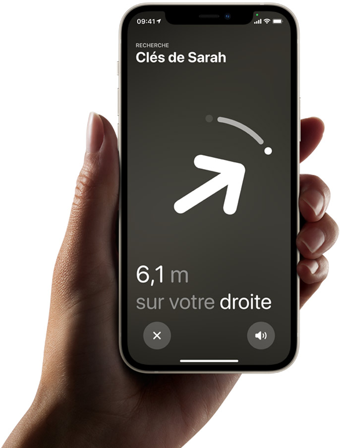
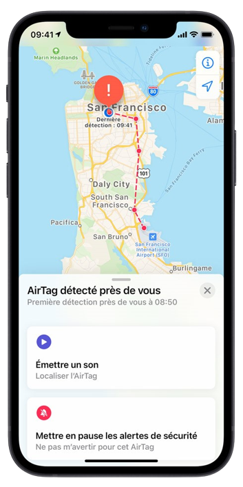

L’AirTag est l’accessoire tout trouvé pour tout retrouver. Accrochez‑en un à vos clés, glissez‑en un autre dans votre sac, et n’y pensez plus. Grâce aux AirTags, vous pouvez facilement repérer vos objets dans l’app Localiser, qui vous permet aussi de détecter vos appareils Apple et de ne pas perdre vos proches de vue.
Pour seulement 39 euros
Un son. Et c’est trouvé.
Paniquer quand on égare son portefeuille ? Avec l’AirTag, c’est de l’histoire ancienne. Rendez‑vous dans le nouvel onglet Objets de l’app Localiser et faites sonner l’AirTag correspondant – ou dites « Dis Siri, où est mon portefeuille ? ». Le haut‑parleur intégré de l’AirTag fait alors retentir un bip. S’il se cache à proximité, sous un coussin ou dans la pièce voisine, vous n’avez plus qu’à vous laisser guider par le son.
Là. Juste là. Vous y êtes presque.
Si votre AirTag n’est pas loin, votre iPhone vous aide à le retrouver grâce à la fonction Localisation précise. La technologie intégrée de l’Ultra Wideband permet d’afficher la distance qui vous sépare de lui, et la direction à suivre.

Le respect de votre vie privée n’est pas en option.
Vous êtes la seule personne à pouvoir localiser votre AirTag. Vos données et votre historique de localisation ne sont jamais stockés dessus. Les appareils qui relaient les informations de localisation de votre AirTag conservent également leur anonymat, et ces données sont chiffrées à chaque étape du processus.
